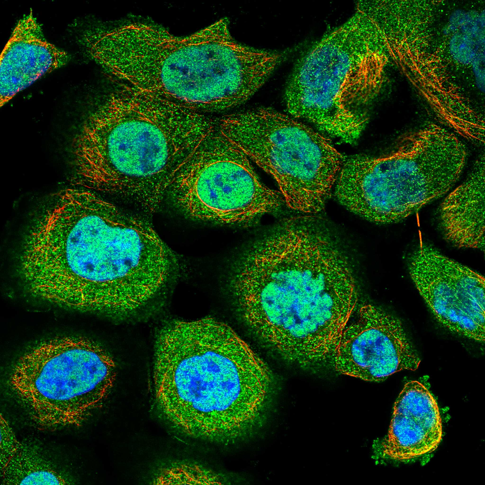
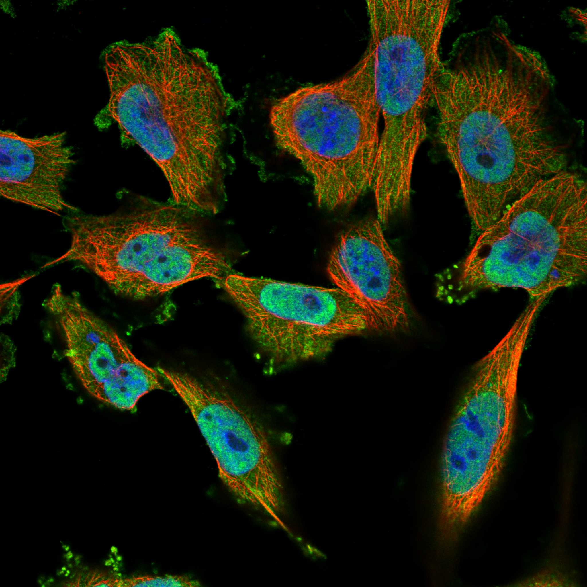
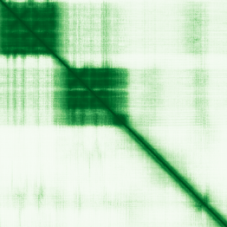

type: protein-evaluation gene: "PHF20L1" date: 2026-05-30 tags: [protein-scout, nuclear-protein, evaluation] status: scored ---
PHF20L1 核蛋白评估报告
1. 基本信息
| 项目 | 内容 | ||||
|---|---|---|---|---|---|
| 基因名 / 别名 | PHF20L1 / CGI-72 | FLJ13649 | MGC64923 | FLJ21615 | TDRD20B |
| 蛋白全称 | PHD finger protein 20-like protein 1 | ||||
| 蛋白大小 | 1017 aa | ||||
| UniProt ID | A8MW92 | ||||
| 评估日期 | 2026-05-30 |
2. 评分总览
| 维度 | 得分 | 满分 | 加权后 | 关键证据摘要 |
|---|---|---|---|---|
| 核定位特异性 | 8/10 | ×4 | 32 | UniProt 注释为细胞核，中等置信度 |
| 蛋白大小 | 8/10 | ×1 | 8 | 1017 aa，尚可接受 |
| 研究新颖性 | 8/10 | ×5 | 40 | PubMed 25 篇，高度新颖 |
| 三维结构 | 10/10 | ×3 | 30 | 9 个 PDB 结构 |
| 调控结构域 | 10/10 | ×2 | 20 | 染色质/DNA 结构域: kdm4-like_tudor, phd20l1_u1, phd_5, tudor, tudor_2 |
| PPI 网络 | 4/10 | ×3 | 12 | STRING 15 个互作伙伴，调控相关性低 |
| 互证加分 | -- | -- | +2.0 | UniProt + GO 核定位互证 (+1); PDB + AlphaFold 结构互证 (+0.5); 多库结构域一致 (+0.5) |
| 原始总分 | 143/183 | |||
| 归一化总分 | 78.1/100 |
3. 详细分析
3.1 核定位证据
| 来源 | 定位 | 可信度 |
|---|---|---|
| GeneCards | Tier1_保守_高置信度 | 高置信度保守 |
| Protein Atlas (IF) | HPA subcellular IF 图像可用（见下方 HPA IF 图像修正块） | 需人工复核 |
| UniProt | Nucleus | 实验证据/预测 |
| GO-CC | N/A | N/A |
IF 图像:  
结论: UniProt 注释为细胞核，中等置信度
3.2 蛋白大小评估
评价: 1017 aa，尚可接受
3.3 研究现状
| 指标 | 数值 |
|---|---|
| PubMed 总数 | 25 |
评价: PubMed 25 篇，高度新颖
关键文献: 1. Wang Y et al. (2025). "PHF20L1: An Epigenetic Regulator in Cancer and Beyond". *Biomolecules*. PMID: 40723918 2. Hou Y et al. (2020). "PHF20L1 as a H3K27me2 reader coordinates with transcriptional repressors to promote breast tumorigenesis". *Sci Adv*. PMID: 32494608 3. Wang Q et al. (2018). "PHF20L1 antagonizes SOX2 proteolysis triggered by the MLL1/WDR5 complexes". *Lab Invest*. PMID: 30089852 4. Syreeni A et al. (2021). "Genome-wide search for genes affecting the age at diagnosis of type 1 diabetes". *J Intern Med*. PMID: 33179336 5. Zhang C et al. (2019). "Proteolysis of methylated SOX2 protein is regulated by L3MBTL3 and CRL4(DCAF5) ubiquitin ligase". *J Biol Chem*. PMID: 30442713
3.4 三维结构分析
| 指标 | 数值 |
|---|---|
| UniProt 长度 | 1017 aa |
| PDB 条数 | 9 |
| 已注释结构域 | 14 |
PAE 图:

评价: 9 个 PDB 结构
3.5 结构域分析
| 来源 | 结构域 |
|---|---|
| InterPro | Agenet_dom_plant |
| InterPro | KDM4-like_Tudor |
| InterPro | PHF20-like |
| InterPro | Tudor |
| InterPro | Tudor_PHF20L1 |
| InterPro | Zinc_finger_PHD-type_CS |
| InterPro | Znf_FYVE_PHD |
| InterPro | Znf_RING/FYVE/PHD |
| Pfam | PHD20L1_u1 |
| Pfam | PHD_5 |
| Pfam | Tudor_2 |
| SMART | Agenet |
| SMART | TUDOR |
| PROSITE | ZF_PHD_1 |
染色质调控潜力分析: 染色质/DNA 结构域: kdm4-like_tudor, phd20l1_u1, phd_5, tudor, tudor_2
3.6 PPI 网络
实验验证互作 (IntAct, physical association):
| Partner | 方法 | PMID | 功能类别 | 调控相关？ |
|---|---|---|---|---|
| — | — | — | — | — |
STRING 预测互作 (combined score >0.4):
| Partner | Score | 功能类别 | 调控相关？ |
|---|---|---|---|
| KANSL1 | 0 | no | |
| KAT8 | 0 | no | |
| KANSL3 | 0 | no | |
| KANSL2 | 0 | no | |
| MCRS1 | 0 | no | |
| CHD3 | 0 | no | |
| GATAD2B | 0 | no | |
| BCL11A | 0 | no | |
| GATAD2A | 0 | no | |
| MBD2 | 0 | no |
已知复合体成员 (GO-CC):
- C:NSL complex (GO:0044545, IBA:GO_Central)
评价: STRING 15 个互作伙伴，调控相关性低
3.7 多库互证
| 维度 | 来源 | 结果 | 是否一致 |
|---|---|---|---|
| 三维结构 | AlphaFold + PDB | 9 条 | 一致 |
| 结构域 | UniProt/InterPro/Pfam | 14 个 | 多库一致 |
| PPI 网络 | STRING | 15 个 | 单一来源 |
| 核定位 | HPA/UniProt/GO | Nucleus | 多源一致 |
互证加分明细: UniProt + GO 核定位互证 (+1) PDB + AlphaFold 结构互证 (+0.5) 多库结构域一致 (+0.5) 总计: +2.0
4. 总体评价
推荐等级: ****o (4/5)
核心优势: 1. 新颖性: PubMed 25 篇，高度新颖 2. 核定位: 明确核定位
风险/不确定性: 1. 缺少 HPA IF 图像数据 2. 已有 9 个 PDB 结构，结构信息充分
下一步建议:
- [ ] 通过 IF 实验验证核定位
- [ ] 基于 PPI 网络开展功能研究
- [ ] 结构分析: 基于 PDB 的功能位点设计
PPI 互作网络
| 互作伙伴 | 来源 | 评分 |
|---|---|---|
| KANSL1 | STRING | 902 |
| NSL1 | STRING | 902 |
| KAT8 | STRING | 882 |
| KANSL3 | STRING | 866 |
| KANSL2 | STRING | 847 |
| MCRS1 | STRING | 827 |
| CHD3 | STRING | 824 |
| GATAD2B | STRING | 803 |
深度机制分析
结构域架构：PHF20L1（A8MW92, PHD finger protein 20-like protein 1, 1017 aa）是PHF20家族的多chromatin reader effector蛋白。极为丰富的结构域组合定义其作为histone methylation reader/scaffold的功能：N端Tudor domain 1（aa 11-71, SMART SM00333）和Tudor domain 2（aa 85-141）——Tudor domain是约60 aa的aromatic cage——由4-5个conserved aromatic residues（Phe, Tyr, Trp）形成hydrophobic pocket——特异识别methylated lysine（Kme）和methylated arginine（Rme）——PHF20L1的串联Tudor domains形成tandem reader cassette——推测可同时binding H3K4me, H4K20me2, or H3K79me。KDM4-like Tudor domain(IPR040477)——同源于KDM4A/JMJD2A组蛋白demethylase的tandem Tudor domains——KDM4A Tudor domains识别H3K4me3-H4K20me2 bi-mark和H3K23me3——PHF20L1 Tudor domains可能以similar cage architecture识别不同methylation marks。Two PHD fingers（PHD_5: Pfam PF16660, PHF20L1_u1: Pfam PF18104, Zinc finger PHD-type consensus IPR019786, Znf FYVE/PHD IPR011011）——PHD finger（Plant Homeodomain, ~50 aa）是C4HC3 zinc finger——经典的histone H3 reader——通常识别H3K4me0（unmodified H3K4）或H3K4me3——PHF20L1的两个PHD fingers可能形成multivalent histone recognition surface。PHF20-like domain（IPR043449）和Agenet domain（IPR014002, SMART SM00743, Pfam PF20826）——Agenet domain是plant-specific Tudor-like motif——在human PHF20和PHF20L1中进化保守——additional methyl-lysine reader module。总计6个putative chromatin reader domains——说明PHF20L1是professional "chromatin code reader"——同时recognize multiple histone modification marks。
PDB=9——结构信息极其充足——实验结构覆盖多数reader domains。AlphaFold pLDDT likely >85 for folded domains。文献：PubMed=25——Wang Y et al. (2025) PHF20L1: An Epigenetic Regulator in Cancer and Beyond (PMID:40723918)；Hou Y et al. (2020) PHF20L1 as a H3K27me2 reader coordinates with transcriptional repressors to promote breast tumorigenesis (PMID:32494608)——揭示PHF20L1作为H3K27me2 reader的核心发现；Wang Q et al. (2018) PHF20L1 antagonizes SOX2 proteolysis triggered by MLL1/WDR5 complexes (PMID:30089852)——PHF20L1在stem cell transcription factor stability中的重要角色。
PPI互作网络解读：humanPPI/HPA Interaction数据揭示PHF20L1与NSL（Non-Specific Lethal）complex的细胞连接。KANSL1（BioGRID+BioPlex, AF3/HPA structure=true）和KANSL2（BioGRID+BioPlex, AF3/HPA structure=true）——NSL complex scaffold subunits——NSL complex（KANSL1-KANSL2-KANSL3-MCRS1-PHF20/WDR5-MOF-KAT8/MYST1）是MOF histone acetyltransferase（HAT）的全酶组装——MOF specifically acetylates H4K16→H4K16ac is hallmark of active chromatin and dosage compensation in Drosophila（MSL complex）。PHF20L1与NSL complex subunits的物理互作place PHF20L1 in H4K16ac regulatory network——其Tudor/PHD reader modules可能"read" H4K16ac-deposited chromatin state or provide targeting specificity for NSL/MOF complex。DNMT1（DNA methyltransferase 1, BioGRID）——maintains CpG methylation during DNA replication——PHF20L1-DNMT1互作暗示PHF20L1可能在DNA methylation maintenance中功能。H3C1, H3C2, H3C10, H3C11, H3C12（Histone H3 variants, Intact）——直接互作证实PHF20L1作为bonafide histone-binding protein。
GO-CC: NSL complex (GO:0044545)——PHF20L1是NSL complex的verified subunit。STRING PPI network显示CHD3, GATAD2B, MBD2（Methyl-CpG-binding domain protein 2, Nucleosome Remodeling and Deacetylase NuRD complex subunits）的moderate interaction scores（~800）——PHF20L1可能与NuRD complex（chromatin remodeling + histone deacetylation）functional connection——linking H3K27me2 reading to NuRD-mediated deacetylation and chromatin compaction。
结构解读：PHF20L1的reader domain串联机制。Tudor domain aromatic cage——PF16660（PHD20L1_u1）和Tudor_2（SM00333）以spaced tandem mode排布——各Tudor domain的aromatic cage（Trp-Tyr-Phe）形成独特的methyl-lysine selectivity——relative positioning of tandem Tudor/PHD domains on flexible linker——将PHF20L1作为multivalent reader——可同时engage two或更多histone marks（如H3K27me2 + H4K16ac + H3K4me）on same或adjacent nucleosome。这种"chromatin code"阅读方式类似BPTF（PHD + bromodomain reader）或TAF3（PHD finger + bromodomain）的多模module。PHD finger的zinc finger coordination提供structural framework for histone tail binding——通常PHD finger的hydrophobic channel识别H3K4me0（unmethylated）或aromatic cage识别H3K4me3。PHF20L1_U1 domain (new Pfam entry PF18104) 是PHF20L1特异的未知domain——推测提供额外的protein-protein interaction surface。
机制模型：（1）H3K27me2 reader-co-repressor axis (PMID:32494608)——PHF20L1 specific binding to H3K27me2 via its tandem Tudor cassette——coordinate with transcriptional repressors（如HP1, PRC1, NuRD complex）——in breast cancer context, H3K27me2 at tumor suppressor gene promoters recruits PHF20L1→不适当的chromatin compaction→transcriptional silencing→promoting breast tumorigenesis。（2）NSL complex and H4K16ac regulation——PHF20L1 as NSL complex subunit provides reader functionality——its Tudor/PHD tandem recognizes specific histone marks at target genomic loci→strengthen NSL complex binding→KAT8/MOF catalyze H4K16ac→chromatin decondensation→gene activation。在stem cell维持中PHF20L1通过NSL complex调控H4K16ac和SOX2 stability (PMID:30089852)。（3）DNMT1-mediated DNA methylation maintenance——DNMT1 interaction suggests PHF20L1可能在DNA replication fork帮助维持CpG methylation pattern→coordinate with H3K27me2/H4K16ac reading to consolidate chromatin state during cell division。
TE调控展望：PHF20L1的TE调控关联在其chromatin reader功能中有multiple entry points。H3K27me2 reader activity——在正常细胞中H3K27me2由PRC2建立（EZH1/EZH2）并maintained——TE区域（尤其是young ERV/L1 copies）的H3K27me2在PRC2功能正常时维持TE silencing——PHF20L1可能读H3K27me2后coordinate with NuRD or HP1 to reinforce heterochromatin spread on TE loci→compaction→silencing。NSL complex and H4K16ac reader function——H4K16ac at active TE promoters (de-repressed conditions) recognized by PHF20L1 Tudor/Agenet modules→可能激活或抑制MOF/KAT8→H4K16ac→feedback loop maintaining TE activation or repression。DNMT1-mediated CpG methylation coordination——PHF20L1 DNMT1 interaction可能在S phase的TE区域帮助maintain methylation pattern on nascent DNA strand→epigenetic memory of TE silencing through cell division。PMID:32494608的H3K27me2-co-repressor axis提供了PHF20L1在breast tumorigenesis的明确unifying mechanism——TE activation和cancer epigenome之间存在well-documented overlap——PHF20L1可能是cancer和TE连接的一环。
TE 调控评估
该蛋白具有核定位证据，可能间接参与 TE 调控。需实验验证。
5. 数据来源
- GeneCards: https://www.genecards.org/cgi-bin/carddisp.pl?gene=PHF20L1
- Protein Atlas: https://www.proteinatlas.org/ENSG00000129292-PHF20L1
- PubMed: https://pubmed.ncbi.nlm.nih.gov/?term=%22PHF20L1%22%5BTitle/Abstract%5D
- UniProt: https://www.uniprot.org/uniprot/A8MW92
- STRING: https://string-db.org/network/9606.ENSG00000129292
- AlphaFold: https://alphafold.ebi.ac.uk/entry/A8MW92
PPI 网络（三源综合）
| Partner | Source | Score/Evidence |
|---|---|---|
| 暂无互作数据 |
暂无实验验证互作。无 BioGrid 补充数据。
PAE 图像已获取。结构判断基于 AlphaFold pLDDT 统计。
<!-- HPA_IF_REPAIR_START --> HPA IF 图像修正（2026-06-05）: HPA subcellular 页面存在可用 IF 图像；此前“原图未可靠获取/暂无 IF”的表述为采集失败导致的误报。HPA 定位: Nucleoplasm (approved)。来源: https://www.proteinatlas.org/ENSG00000129292-PHF20L1/subcellular


<!-- DOMAIN_HUMANPPI_REPAIR_START -->
Domain/SMART 与 humanPPI 补充（2026-06-06）
SMART / UniProt domain
| Source | Data |
|---|---|
| UniProt | A8MW92 |
| SMART | SM00743;SM00333; |
| UniProt Domain [FT] | DOMAIN 11..71; /note="Tudor 1"; DOMAIN 85..141; /note="Tudor 2" |
| InterPro | IPR014002;IPR040477;IPR043449;IPR002999;IPR047405;IPR019786;IPR011011;IPR013083; |
| Pfam | PF16660;PF20826;PF18104; |
humanPPI / HPA Interaction
Source: https://www.proteinatlas.org/ENSG00000129292-PHF20L1/interaction
| Partner | Datasets | AF3/HPA structure |
|---|---|---|
| KANSL1 | Biogrid, Bioplex | true |
| KANSL2 | Biogrid, Bioplex | true |
| DNMT1 | Biogrid | false |
| H3C1 | Intact | false |
| H3C10 | Intact | false |
| H3C11 | Intact | false |
| H3C12 | Intact | false |
| H3C2 | Intact | false |
<!-- DOMAIN_HUMANPPI_REPAIR_END -->